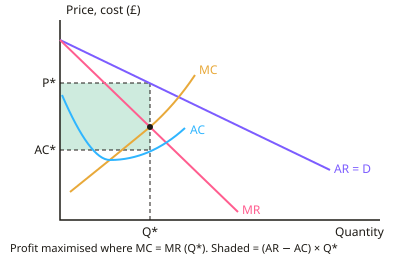

A-level Economics Year 13 · Topic 8
Quantitative skills and synoptic evaluation
This topic practises the calculation and evaluation skills needed across the whole A level course.
We will work through business, distribution, international, macroeconomic and financial calculations.
Then we focus on synoptic essays and data response questions, and how to build strong chains of analysis and evaluation.
- 5 subtopics
- 266 questions
- Free: 8.1 notes and 10 questions
In this topic
- 8.1Business calculations: revenue, costs, profit, elasticity, market share and concentration ratiosFree below · 32 questions
- 8.2Distribution and development calculations: Gini, Lorenz, deciles, index numbers and HDIOpen in Full Marks · 63 questions
- 8.3International calculations: opportunity cost, terms of trade, exchange rates and balance of payments dataOpen in Full Marks · 62 questions
- 8.4Macro and financial calculations: multiplier, tax and debt ratios, real and nominal interest rates, bond yieldsOpen in Full Marks · 47 questions
- 8.5Synoptic essay, data-response and evaluation technique across micro, macro and global themesOpen in Full Marks · 62 questions
8.1 · Free notes
Business calculations: revenue, costs, profit, elasticity, market share and concentration ratios

Key points
- Total revenue (TR) = price × quantity (P × Q). Average revenue (AR) = TR ÷ Q, which equals price. Marginal revenue (MR) = ΔTR ÷ ΔQ.
- Total cost (TC) = fixed cost (FC) + variable cost (VC). Average cost (AC) = TC ÷ Q, and marginal cost (MC) = ΔTC ÷ ΔQ. Average variable cost (AVC) = VC ÷ Q. Fixed costs do not change with output in the short run.
- Profit = TR − TC. Normal profit is where TR = TC (AR = AC). Supernormal profit = (AR − AC) × Q when AR > AC.
- Profit maximisation occurs at the output where MC = MR, with MC cutting MR from below. MC always cuts AC and AVC at their minimum points.
- Profit margin (%) = profit ÷ revenue × 100. Compare margins as well as totals, because a bigger firm will usually earn a larger absolute profit.
- Percentage change = (new − old) ÷ old × 100. Always use the original value as the base, and give units and the correct sign.
- Price elasticity of demand (PED) = %ΔQd ÷ %ΔP. It is negative, but the sign is often ignored. If |PED| > 1 demand is elastic, if < 1 it is inelastic, and if = 1 it is unitary.
- Total revenue rule: if demand is elastic, a price rise cuts TR. If demand is inelastic, a price rise increases TR. If PED is unitary, TR is unchanged.
- Income elasticity (YED) = %ΔQd ÷ %Δincome. Positive means a normal good, above 1 a luxury and negative an inferior good. Cross elasticity (XED) = %ΔQd of A ÷ %ΔP of B. Positive means substitutes and negative means complements. PES = %ΔQs ÷ %ΔP.
- Market share = firm's sales ÷ total market sales × 100. The concentration ratio (CRn) is the sum of the shares of the n largest firms, for example CR4. A high ratio suggests an oligopoly or market power.
- Exam technique: write the formula, show the substitution, then give the answer with units (£, %, units) and to the requested decimal places. Interpret the figure (for example 'inelastic, so TR rises'). Evaluate by noting that data are often short run and ceteris paribus.
In more detail
- Worked market share and CR3: a £500m market where firms A, B and C sell £150m, £100m and £75m → shares of 30%, 20% and 15%, so CR3 = 65%.
- Worked profit maximisation from a table: at Q = 6, MR = £12 and MC = £10; at Q = 7, MR = £10 and MC = £14 → produce 6 units.
- Worked YED: incomes rise 8% and demand for takeaways rises 12% → YED = +1.5, a luxury.
- Worked revenue test: price rises 5% and quantity falls 2% → PED = −0.4, inelastic, so total revenue rises.
Practice
Business calculations: revenue, costs, profit, elasticity, market share and concentration ratios: 10 questions
Pick an answer to check it, or open the answer for the explanation.
1. A firm sells 400 units at £12.50 each. What is total revenue?
- £412.50
- £4,800
- £32
- £5,000
Show answer
D: £5,000. TR = P × Q = £12.50 × 400 = £5,000. Adding price and quantity (£412.50) or dividing quantity by price (£32) are common errors.
2. A firm has TR of £90,000, fixed costs of £30,000 and variable costs of £45,000. What is its profit?
- £15,000
- £45,000
- £60,000
- £75,000
Show answer
A: £15,000. TC = £30,000 + £45,000 = £75,000. Profit = TR − TC = £90,000 − £75,000 = £15,000. £60,000 ignores variable costs and £75,000 is just total cost.
3. Total cost is £240,000 at 8,000 units, of which £80,000 is fixed. What is the average variable cost?
- £10
- £40
- £30
- £20
Show answer
D: £20. VC = £240,000 − £80,000 = £160,000, so AVC = £160,000 ÷ 8,000 = £20. £30 is average total cost and £10 is average fixed cost.
4. Output rises from 100 to 110 units and total revenue rises from £2,000 to £2,090. What is marginal revenue per extra unit?
- £9
- £19
- £90
- £8.50
Show answer
A: £9. MR = ΔTR ÷ ΔQ = £90 ÷ 10 = £9. £90 is the change in TR, not per unit, and £19 is the new average revenue (£2,090 ÷ 110).
5. Price rises from £2.00 to £2.20 and quantity demanded falls from 500 to 440. What is PED?
- −1.1
- −1.2
- −0.83
- −12
Show answer
B: −1.2. %ΔP = +10% and %ΔQd = −60 ÷ 500 = −12%. PED = −12 ÷ 10 = −1.2, so demand is price elastic. −0.83 inverts the formula.
6. A firm selling a good with PED of −0.4 raises its price. What happens to total revenue?
- It is unchanged
- It rises, as demand is inelastic
- It rises, as demand is elastic
- It falls, as demand is inelastic
Show answer
B: It rises, as demand is inelastic. With |PED| < 1 the % fall in quantity is smaller than the % rise in price, so TR = P × Q rises. TR only falls after a price rise if demand is elastic.
7. Income rises 5% and demand for a good falls 2.5%. What is the YED and what type of good is it?
- +0.5, normal necessity
- −0.5, inferior good
- −0.5, normal good
- −2, luxury good
Show answer
B: −0.5, inferior good. YED = −2.5 ÷ 5 = −0.5. A negative YED means demand falls as income rises, so the good is inferior.
8. An 8% rise in price leads to a 4% rise in quantity supplied. What is PES and how is supply described?
- 0.5, inelastic
- 2.0, elastic
- 32, elastic
- 0.5, elastic
Show answer
A: 0.5, inelastic. PES = %ΔQs ÷ %ΔP = 4 ÷ 8 = 0.5. This is below 1, so supply is price inelastic. Inverting the formula gives the wrong figure of 2.0.
9. A firm has sales of £45m in a market worth £180m. If its sales rise to £54m and the market stays at £180m, what is its new market share?
- 27%
- 25%
- 33%
- 30%
Show answer
D: 30%. Market share = 54 ÷ 180 × 100 = 30%. It was 25% before (45 ÷ 180), so the rise is 5 percentage points, not 5%.
10. The four largest firms in a market have shares of 30%, 25%, 15% and 10%. What is the four-firm concentration ratio?
- 20%
- 100%
- 80%
- 55%
Show answer
C: 80%. CR4 = 30 + 25 + 15 + 10 = 80%. A high ratio suggests an oligopolistic market; the remaining firms share the other 20%.
Keep going in Full Marks
Full Marks has 32 questions on Business calculations: revenue, costs, profit, elasticity, market share and concentration ratios (22 more than here), set out in practice levels. You also get notes and 3D models for all 5 subtopics of Quantitative skills and synoptic evaluation, plus games, timed exams and past papers.
On your exam board
- AQATopic Q: Quantitative skills and synoptic evaluation
- OCRTopic Q: Quantitative skills and synoptic evaluation
- EdexcelTopic Q: Quantitative skills and synoptic evaluation
Not in the Cambridge specification.